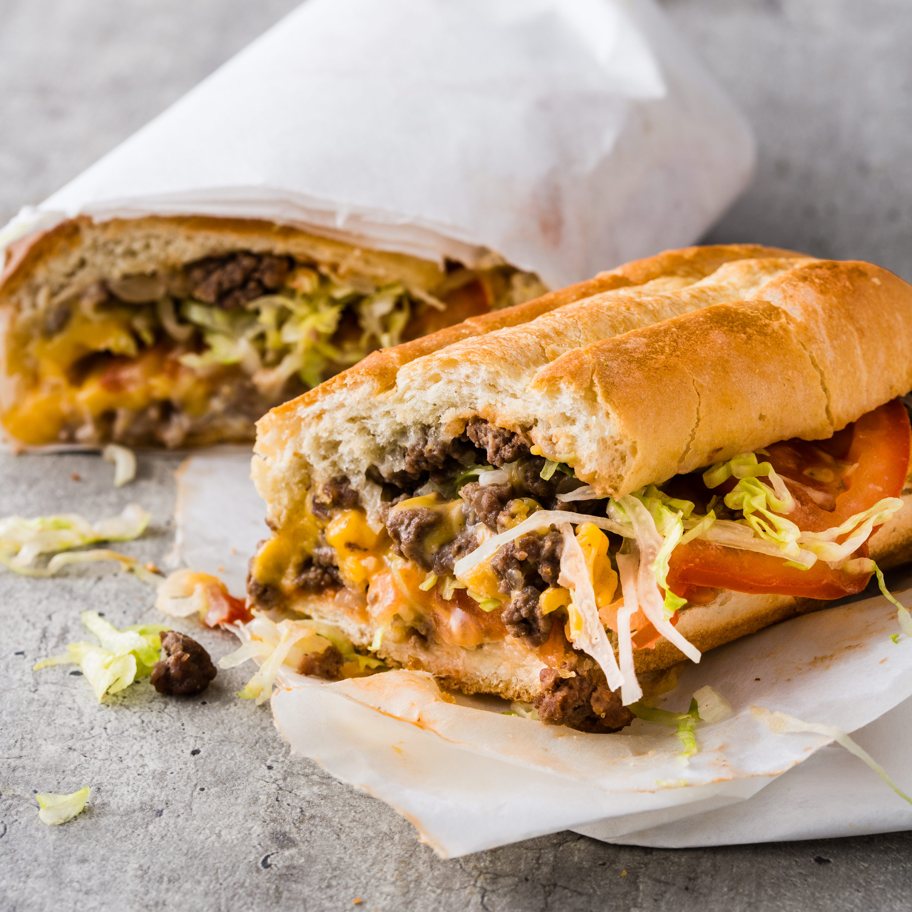

Chopped Cheese

Description
The chopped cheese is a fine example of the cheeseburger taking on new and beautiful
shapes. Commonly served in New York bodegas, the chopped cheese is the perfect way
to feed the body and soul on a budget and pressed time.
Ingredients
Makes 4 sandwhiches
- 4 - Hoagie Buns
- 1/4 cup - Mayo
- 1 - Tablespoon Butter
- 1 - White Onion
- 1 1/4lbs - Ground Beef
- 1 Teaspoon - Salt
- 1/2 Teaspoon - Pepper
- 8 Slices - American Cheese
- 1 cup - Shredded Lettuce
- 1 - Tomato
- Halve the buns and lightly toast them lightly. Spread one side with mayonnaise.
- In a non-stick pan, add the butter. Once melted, add the onion and cook until
fragrant. Push to one side.
- Add the ground beef and do not break apart. Season with salt, pepper, and
garlic powder. Sear for 4 minutes, flip, and cook for a further 2 minutes.
- Slowly break apart the beef then fold through the onions. Once there is no more
pink in the center, divide the portion of beef into four equal sized portions.
- Add 2 slices of the American cheese over each portion and cook for 2 minutes,
until gooey and melted.
- Transfer each portion into the hoagie buns, add shredded iceberg lettuce and
sliced tomatoes.